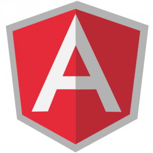

Этот пост предназначен для тех, кто только начинает знакомиться с javascript фреймворком AngularJs.
UPD: Пост обновлен 25.10.2015 и является актуальным для Angular1.4.
Обычно список литературы дается в конце, но в данном случае разумно было бы предоставить все полезные ссылки сразу же.
Итак, что полезного есть на официальном сайте:
- Быстрый старт (пошаговая разработка простого приложения)
- Руководство разработчика и API
Статьи на хабре(полистать, а потом вернуться полистать еще раз):
- AngularJS — фреймворк для динамических веб-приложений от Google
- Практикум AngularJS — разработка административной панели
Готовый скелет(структура с файлами, директориями и веб-сервером), с которого можно начинать создания своего приложения берем тут: github( либо zip).
Преимущества использования AngularJS(от сюда):
- Dependency injection в стандартной поставке
- Возможности модульного тестирования в стандартной поставке
- e2e тесты позволяют легко мокать запросы
- Декларативность(использование HTML атрибутов по максимуму)
- Отличное open source сообщество
- Дружелюбность к REST
- Scopes, bindings и watches
Немного видео(на английском):
- AngularJS Hello World ( 4 минуты )
- AngularJS Tutorial ( 12минут )
- AngularJS – Routes and Partials ( 14 минут )
Крайне рекомендую все ролики о AngularJS от egghead, очень хорошее инвестирование времени. К ним вы сможете еще не раз возвращаться и пересматривать.
Вспомогательные инструменты на данный момент по прежнему находятся в состоянии зародыша(либо выкидыша) но взглянуть все равно стоит:
- AngularJS Batarang – в дополнение Chrome Developer Tools.
- ng-inspector – расширение для Chrome направленное на анализ scope
- AngularJS Inspect Watchers – анализ вотчеров на сайте
Быстрый старт
Давайте теперь вместе проделаем шаги из “быстрого старта”.
Убеждаемся в том что у нас стоит:
Выкачиваем себе тренинг проект:
[shell gutter=”false”]
$ git clone –depth=14 https://github.com/angular/angular-phonecat.git
[/shell]
Мы используем специальный флаг –depth==14, чтобы получить только последние 14 коммитов.
Перейдем в директорию проекта:
[shell gutter=”false”]
$ cd angular-phonecat
[/shell]
Самонастройка(Bootstrapping)
В начале каждого пункта будет дана команда, используя которую можно откатиться до состояния кода конкретного пункта.
[shell gutter=”false”]
$ git checkout -f step-0
[/shell]
Запустим наш web-сервер:
[shell gutter=”false”]
$ npm start
[/shell]
Если все отработало без ошибок – можем переходить на http://localhost:8000/app/index.html
Открываем файл app/index.html:
<!doctype html>
<html lang="en" ng-app>
<head>
<meta charset="utf-8">
<title>My HTML File</title>
<link rel="stylesheet" href="bower_components/bootstrap/dist/css/bootstrap.css">
<link rel="stylesheet" href="css/app.css">
<script src="bower_components/angular/angular.js"></script>
</head>
<body>
<p>Nothing here {{'yet' + '!'}}</p>
</body>
</html>
Вот она наша первая песочница для AngularJs. Важные моменты, которые мы должны вынести из этого кусочка HTML:
<html lang="en" ng-app>
– специальный ng-app атрибут, указывающий на то, какой элемент в DOM будет корневым для приложения(Т.е. мы можем сказать, что AngularJs будет использовать весь документ, либо какую-то конкретную его часть).
Nothing here {{'yet' + '!'}}`
Двойная фигурная кавычка используется для шаблонов: внутри можно указать переменную, выражение(подробнее в части о шаблонах).
Нам предлагают поиграться и заменить эту строчку на что-то такое:
<p>1 + 2 = {{ 1 + 2 }}</p>
Теперь проясним что происходит при инициализации AngularJs, которая происходит автоматически по умолчанию:
- создается специальный объект Инжектор($injector), по средствам которого получаются все остальные сущности
- Инжектор создает $rootScope, что является контекстом для модели нашего приложения
- фреймворк “компилирует” DOM начиная с ngApp используя при этом rootScope.
После того как приложение выполнило этап самонастройки оно ждет событий от браузера, по которым, в случае необходимости, будут реагировать модели.
MVC
[shell gutter=”false”]
$ git checkout -f step-2
[/shell]
Представление (View)
В AngularJS view компонент представляет из себя отображение модели через HTML шаблон. Это означает, что при изменение модели, представление тоже будет меняться.
Зайдем в app/index.htm и посмотрим на содержание body:
<li ng-repeat="phone in phones">
<span>{{phone.name}}</span>
<p>{{phone.snippet}}</p>
</li>
phones – переменная(массив объектов), которую мы задали в контроллере(о нем позже)
ng-repeat – директива, которая запускает перебор коллекции(аналог forEach)
{{phone}} – элемент коллекции
{{phone.name}}, {{phone.snippet}} – свойства элемента коллекции
Т.е. другими словами: сколько элементов будет в массиве phones – столько <li> выведет view.
Поэкспериментируем с шаблоном и выведем что-то такое:
<p>Total number of phones: {{phones.length}}</p>
или такое(так тоже можно использовать директиву ng-repeat):
<table>
<tr><th>row number</th></tr>
<tr ng-repeat="i in [0, 1, 2, 3, 4, 5, 6, 7]"><td>{{i+1}}</td></tr>
</table>
Контроллер (Controller)
Еще раз посмотрим на app/index.htm и обратим внимание на атрибут тега body:
<body ng-controller="PhoneListCtrl">
– в директиве ng-controller мы указываем, какой контролер должен обрабатывать данную область.
PhoneListCtrl – это имя метода, который мы можем найти тут app/js/controllers.js:
[javascript]
function PhoneListCtrl($scope) {
$scope.phones = [
{"name": "Nexus S",
"snippet": "Fast just got faster with Nexus S."},
{"name": "Motorola XOOM™ with Wi-Fi",
"snippet": "The Next, Next Generation tablet."},
{"name": "MOTOROLA XOOM™",
"snippet": "The Next, Next Generation tablet."}
];
}
[/javascript]
В нашем случае мы просто заносим в $scope коллекцию объектов, чтобы потом ее отобразить во вью.
$scope, $rootScope
В AngularJS $scope и $rootScope – это ключевые сущности для передачи данных между моделью и отображением посредством контроллера. При этом $rootScope – это корневой scope, к которому имеют доступ все, а $scope – scope определенного контроллера. Т.е. в нашем примере мы занесли данные только в scope нашего контроллера(PhoneListCtrl), а если бы мы хотели, чтобы другие контроллеры тоже получили доступ, то нам необходимо было использовать $rootScope. Более подробно можно почитать тут. ( также в тему: Передача данных между сущностями AngularJS )
Теперь, когда мы знаем что такое Скоуп можно поэкспериментировать и с ним записать другие данные и попытаться отобразить их в представлении:
$scope.hello = "Hello, World!" $rootScope.hello = "Hello, Universe!"
!Внимание. Чтобы использовать $rootScope его также нужно добавить как зависимость в контроллере:
function PhoneListCtrl($scope, $rootScope)
Unit-тесты в AngularJS
Посмотрим пример теста в test/unit/controllersSpec.js:
[javascript]
describe(‘PhoneCat controllers’, function() {
describe(‘PhoneListCtrl’, function(){
it(‘should create "phones" model with 3 phones’, function() {
var scope = {},
ctrl = new PhoneListCtrl(scope);
expect(scope.phones.length).toBe(3);
});
});
});
[/javascript]
Кто разбирался с Jasmine, нет ничего особо сложного: в данном тесте мы проверяем контроллер и хотим убедиться что он занес в коллекцию 3 записи.
Запуск тестов используя karma.
Для запуска тестов выполняем команду:
$ npm test
И после этого у нас должен запуститься тест-сервер и открыться 2 браузера(Chrome и Firefox). В двух браузерах будут выполнены тестовые манипуляции, после чего вы должны увидеть в у себя в консоле примерно следующее:
Chrome 46.0.2490 (Mac OS X 10.11.0): Executed 1 of 1 SUCCESS (0.045 secs / 0.039 secs) Firefox 41.0.0 (Mac OS X 10.11.0): Executed 1 of 1 SUCCESS (0.033 secs / 0.031 secs) TOTAL: 2 SUCCESS
Теперь можете попробовать что-то изменить в коде. Заметили? Тесты были запущены заново, т.е. после каждого изменения karma будет выполнять тесты. Файлы, за изменением которых нужно наблюдать, можно выставить в конфиге( test/karma.conf.js)
Продолжение следует…
UPD: AngularJs Basics – прекрасно структурированный сайт документации